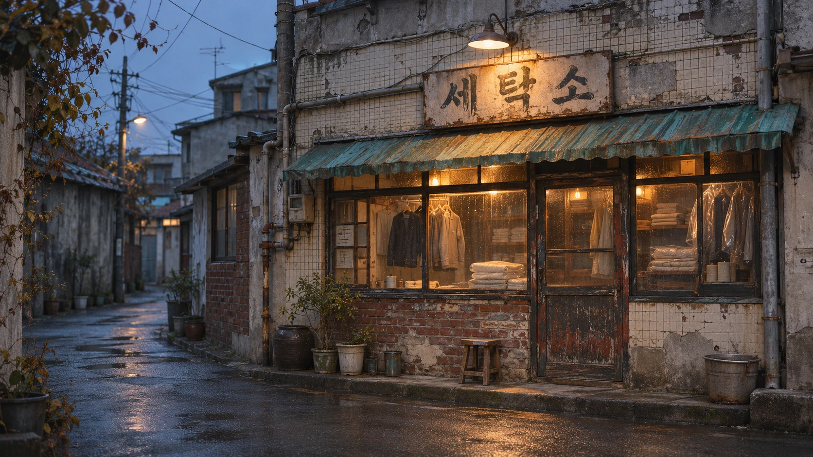

THE STORIES
세탁소에 맡겨진 이야기
옷 한 벌에 남아 있는, 마음 한 조각.
오래된 골목의,
작은 불빛 하나.
낡은 간판과 손때 묻은 유리문.
그 너머로 은은한 온기가 새어 나옵니다.
아직 따뜻한 세탁소는
짧은 이야기들이 하나씩 걸리는 공간입니다.
잠시 머물다 가도 괜찮습니다.

옷 한 벌에 남아 있는, 마음 한 조각.
낡은 간판과 손때 묻은 유리문.
그 너머로 은은한 온기가 새어 나옵니다.
아직 따뜻한 세탁소는
짧은 이야기들이 하나씩 걸리는 공간입니다.
잠시 머물다 가도 괜찮습니다.